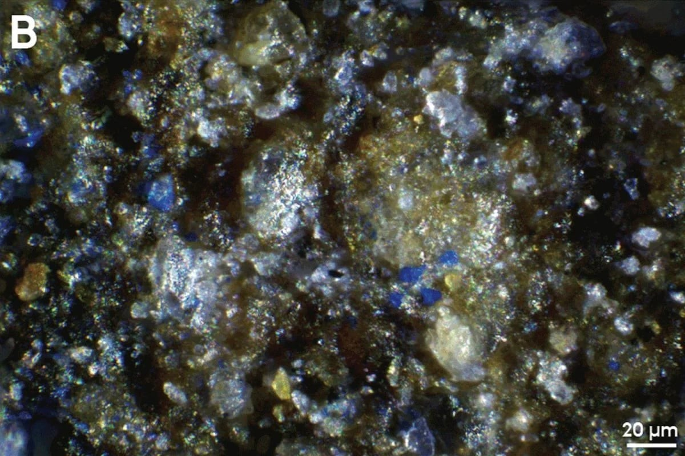
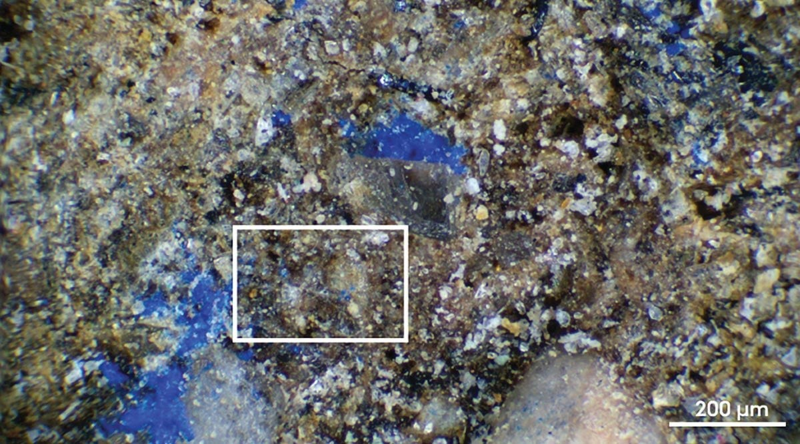

INTELLIGENT
BEINGS
BEINGS
A 13,000-year-old stone from Germany preserves traces of an unexpected blue pigment, challenging
long-held assumptions about Palaeolithic colour use.
In a groundbreaking discovery that sheds
new light on the prehistoric origins of
art and human creativity, researchers
from Aarhus University have identified
the earliest known use of blue pigment
in Europe.

At the Final Paleolithic site of Mühlheim-
Dietesheim in Germany, archaeologists
from Aarhus University identified a faint
blue residue on a stone artifact that is
roughly 13,000 years old. After applying
several advanced scientific techniques,
the team determined that the material was
the mineral pigment azurite, known for
its intense blue color and not previously
documented in Europe’s Paleolithic
artistic record.
“This challenges what we thought we knew
about Paleolithic pigment use,” said Dr. Izzy
Wisher, the lead author of the study.
A Stone Palette Reveals New Possibilities
The stone bearing the azurite traces was
originally thought to be an oil lamp. Now,
it appears to have been a mixing surface or
palette for preparing blue pigments — hinting
at artistic or cosmetic traditions that remain
largely invisible today.
Until recently, researchers assumed that
Paleolithic artists relied almost entirely on
red and black pigments, since virtually no
other colors appear in surviving artworks from
this era. Many experts attributed this pattern
to either the scarcity of blue minerals or their
limited appeal.
Because blue tones are missing from known
Paleolithic art, the new finding raises the
possibility that blue pigments were instead
applied to the body or used to color textiles,
activities that rarely preserve well in the
archaeological record.

“The presence of azurite shows that Paleolithic
people had a deep knowledge of mineral pigments
and could access a much broader color palette
than we previously thought – and they may have
been selective in the way they used certain
colors,” Izzy Wisher says.
The findings urge a rethink of Paleolithic art
and color use, opening new avenues for exploring
how early humans expressed identity, status, and
beliefs through materials far more varied and
vibrant than previously imagined.
Lise Meitner was an Austrian-Swedish physicist who helped discover nuclear fission, the process that splits atom and releases
huge amounts of energy. Her work let to major scientific advances, including nuclear power and medical applications.
Even though she made major contribution, she was not
given the Nobel Prize, which may believe she deserved.
She is remembered today as one of the most important
woman in science.
Her most important work happened in 1938. She worked in
Berlin, Germany and later continued her research in Sweden
after fleeing from the Nazis. She studied atoms to
understand how matter works and why certain elements
behave the way they do.
Meitner lived her life in the service of science. She
never married and had no children. Her main recreation
was walking, she enjoyed going on very long walks. She
also loved music and regurlary attend concerts.
Lise Meitner died at the age of 89 in Cambridge on October 27, 1968, after being weakened by a second broken hip and a number of
small strokes. She was buried in the churchyard of St James Church, Bramley, close to where her youngest brother had been buried
a few years previously.